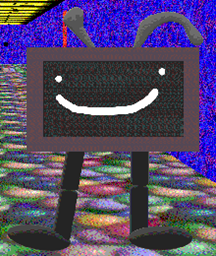

"Televisor 300" is the Playtime replacement in "idiot88s learn game".
Aliases
Televisor 300, TV-300, Old TV, Wonderful TV.
Appearance
Televisor 300 appears as a poorly modeled robot CRT TV, he has two large misshapen gray antennas, two short and somewhat thick black legs with big feet, and a white smiley face on his screen. The rim of the TV is a sort of brown-purple-ish color and the screen is black.
Gallery

Trivia
Televisor 300 was built by Idiot88 with the help of ThatCoolModderGuy.
Televisor 300 is pretty slow due to his heavy body.
Televisor 300 HATES Televisor.
Televisor 300 gets along well with almost everyone.
Televisor 300 is best friends with Robo Kaden and Play_Time_2_0.
Televisor 300 is made of metal and is very magnetic.
Televisor 300 likes to jumprope in his free time.
Poster Description
"a wonderful tv! it likes to play jumprope with the people!"